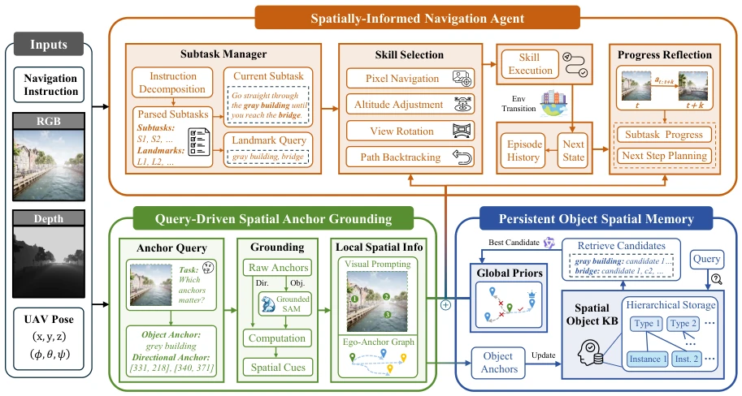
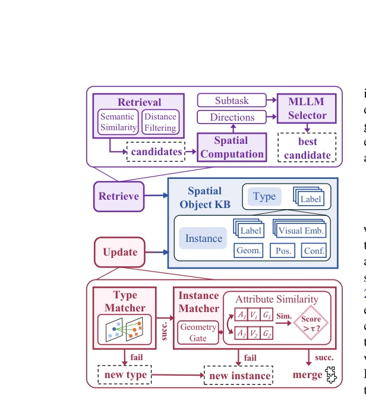
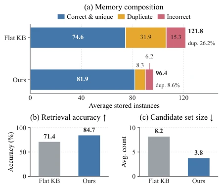
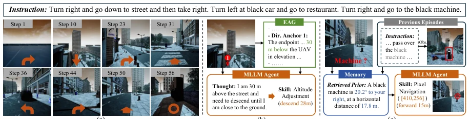
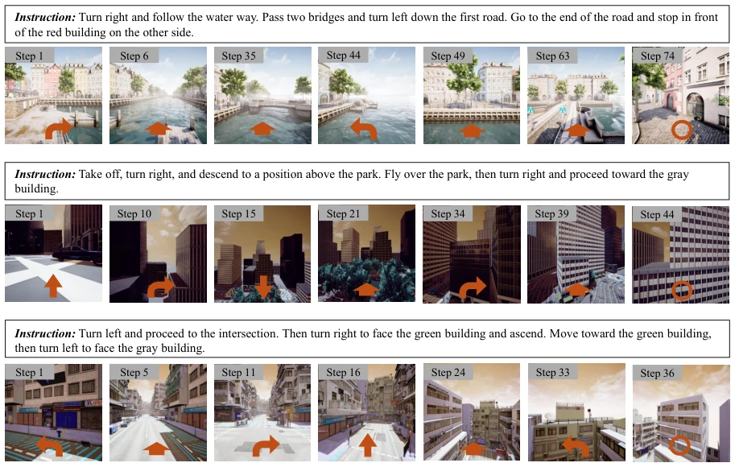

This paper adds an "anchor" to UAV navigation, attempting to address the pain point of "seeing clearly ahead but forgetting the distance" in zero-shot flight. The core of AirAnchor is splitting spatial information into "anchors", viewing EAG locally and querying SOKB remotely. Although it sounds promising, it relies on depth estimation and open-vocabulary detection; once sensors malfunction, the anchors drift. Moreover, it is only tested in simulation environments; real-world deployment still depends on luck. However, compared to methods relying only on local maps or pure memory, this dual-scale fusion indeed elevates zero-shot performance, with SR improving by nearly 40%, effectively adding a "spatial cheat" to MLLM navigation, but the cold-start issue still causes concern.
研究动机Motivation
无人机零样本导航（Aerial VLN）要求智能体既懂眼前路况又懂长远规划。现有零样本方法通常割裂了局部和全局空间信息：要么像 NavGPT (Zhou et al., 2024) 和 MapGPT (Chen et al., 2024) 那样依赖在线构建的局部语义图，缺乏长程记忆；要么像 Citynavagent (Zhang et al., 2025a) 和 Lookasidevln (Ning et al., 2026) 那样依赖离线构建的全局记忆图，难以处理实时动态。这种割裂导致决策模型在融合异构空间表示时复杂且低效。AirAnchor 试图通过“空间锚点”这一共享原语，让局部证据能自然累积为全局知识，解决跨尺度信息交换间接的问题，实现真正的零样本泛化。
UAV zero-shot navigation (Aerial VLN) requires agents to understand both immediate road conditions and long-term planning. Existing zero-shot methods typically sever local and global spatial information: either relying on online-constructed local semantic graphs like NavGPT (Zhou et al., 2024) and MapGPT (Chen et al., 2024), lacking long-range memory; or relying on offline-constructed global memory graphs like Citynavagent (Zhang et al., 2025a) and Lookasidevln (Ning et al., 2026), making it difficult to handle real-time dynamics. This separation leads to decision models being complex and inefficient when fusing heterogeneous spatial representations. AirAnchor attempts to use "spatial anchors" as a shared primitive, allowing local evidence to naturally accumulate into global knowledge, solving the indirect problem of cross-scale information exchange, and achieving true zero-shot generalization.

Figure 2: AirAnchor consists of three key modules. Query-Driven Spatial Anchor Grounding identifies spatial anchors and constructs the local spatial representation. Persistent Object Spatial Memory maintains the global spatial representation, supporting online updates and prior knowledge retrieval. Spatially-Informed Navigation Agent integrates the local spatial representation and global spatial priors within an agentic framework to enable closed-loop and spatially grounded navigation decisions.
AirAnchor is overall divided into three modules. First is Query-Driven Spatial Anchor Grounding, utilizing MLLM to query decision-relevant object anchors and direction anchors based on the current subtask, combining with depth maps to generate Egocentric Anchor Graph (EAG) as local representation. Second is Persistent Object Spatial Memory, maintaining Spatial Object Knowledge Base (SOKB), storing object instances through hierarchical structures, supporting online updates and landmark prior retrieval. Finally is Spatially-Informed Navigation Agent, which is a closed-loop decision framework, inputting EAG and SOKB information into MLLM for skill selection (such as pixel navigation, altitude adjustment) and progress reflection. In terms of data flow, observation input leads to anchor generation, anchors update memory, and memory along with the local graph jointly assist the Agent's decision, forming a closed loop.

Figure 3: Overview of Persistent Object Spatial Mem- ory. Centered on the SOKB, it maintains the global spatial representation to support reliable landmark-prior retrieval and online object knowledge updates.

Figure 4: Comparison of object knowledge base design. We compare the proposed SOKB with a flat KB in terms of (a) memory composition, (b) landmark retrieval ac- curacy, and (c) candidate-set size.
Tested on the AerialVLN-S dataset, comparing statistical methods, learning baselines (Seq2Seq, LAG), and zero-shot methods (NavGPT, FineCog-Nav, etc.). Metrics include SR, OSR, NE, SDTW. Results show AirAnchor achieves SR of 9.2% on unseen scenes, superior to FineCog-Nav's 6.2%. Ablation studies show that removing direction anchors or object anchors significantly lowers performance; SOKB reduces 74% duplicate instances compared to flat KB and has higher retrieval accuracy. Additionally, removing spatial reflection or EAG leads to a significant drop in SR, validating the necessity of dual-scale spatial information fusion.

Figure 5: Visualization of a successful navigation episode. (a) Key steps throughout the episode. (b) Local spatial grounding at Step 10. (c) Global prior guidance at Step 50.

Figure 6: Visualization of key navigation steps from additional successful trajectories across different scenes.